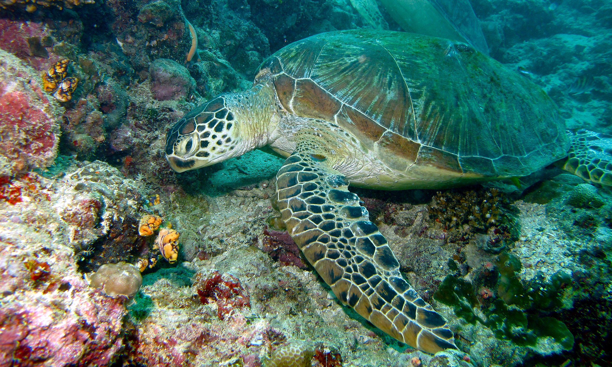
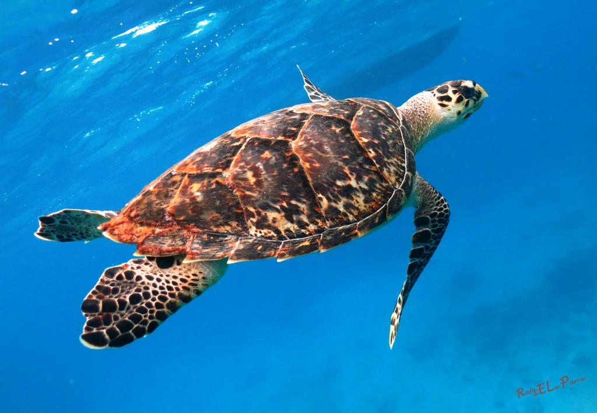
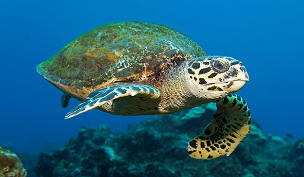
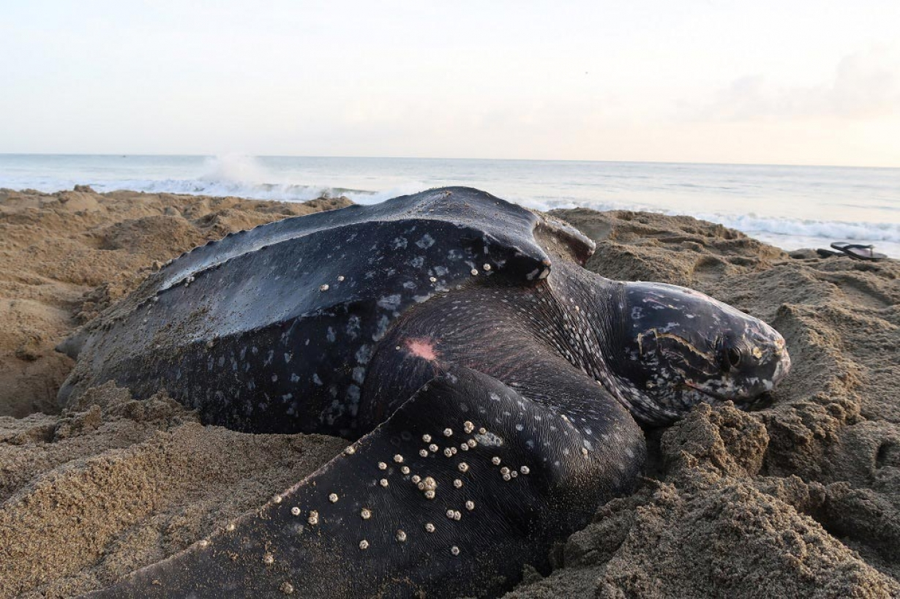

Locations in Sri Lanka Where You Can See Various Types Of Turtles
1.Green Turtle (Chelonia mydas)

2.Hawksbill Turtle (Eretmochelys imbricata)

3.Olive Ridley (Lepidochelys olivacea)

4.Loggerhead (Caretta caretta)

5.Leatherback (Dermochelys coriacea)
